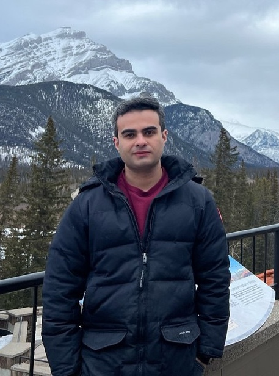

PhD, University of Calgary
Data Engineer · GIS data scientist · AI Engineer · Geospatial data scientist
I am a PhD researcher in Geographic Information Systems (GIS) with 6 years of experience as a GIS Software Developer and GIS Data Analyst and an additional 6 years as a Data Engineer and Software Developer. I work at the intersection of geospatial technologies, software engineering, and data science to turn complex data into actionable insight.
I have also published research on complex event detection in video streams and IoT data engineering, advancing spatio-temporal analytics and intelligent monitoring systems.